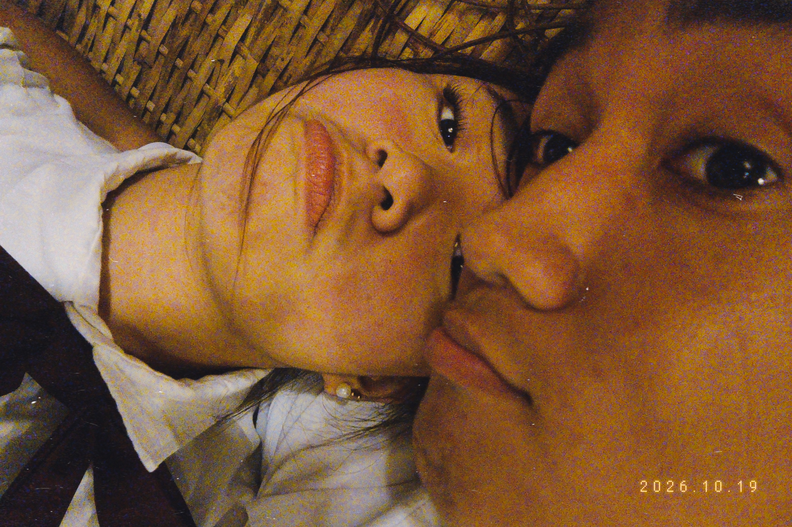

With my favorite person
Just a short message for you.
Hi Baby,
I know po na magiging mahirap sayo ang 1st day or 1st week po sa ojt pero naniniwala ako sayo na kakayanin, and ik na kakayanin mo rin makapag adjust agad sa manila.
Basta po pag may concern or need wag po ikaw mag dadalwang isip mag sabi sa akin andito lang po ako lagi para sayo baby.
Syempre wag mo po pabayaan ang sarili mo, mahirap po magkasakit lalo na pag nasa manila. Focus ka lang po sa ojt mo, wag ka po mag alala, gagawa at gagawa ako ng way para magkita tayo, walang ibang magiging dahilan.
Pwede mo naman po gawin or kainin kung ano po gusto and hindi kita pag hihigpitan or pag babawalan, pero po pag alam na bawal po ay yun lang ang iiwasan, and sa ice cream naman po is once a week lang po, excep sa food iwasan din po yung mga bawal yung pag papahid ng alcohol sa katawan at pag pulbo.
Kakain din po sa tamang oras, iba po ang ojt sa school day/works kaya need mo po lagi kumain. Habol ko lang po pag kaya umiwas dun sa mga yun (alam mo na po yun) is iwasan kesa po mabarino or mainis ka lang, okay lang po kahit kayo ni mhar lang alam ko naman po na safe ka sa kanya at di ka niya hahayaan magalit or mabarino ng dahil sa kanya.
Sa akin naman po is wag ka po mag alala aalagaan ko po sarili ko, habang wala ka, mag sasabi po ako sayo pag may problema or nararamdaman, nag pinky promise naman po ako sayo about dun
God Bless sa OJT mo po Baby. Andito lang ako laging naka suporta sayo, proud po ako sayo. I love you! Ma-mimiss po kita!
Always yours,
Drich